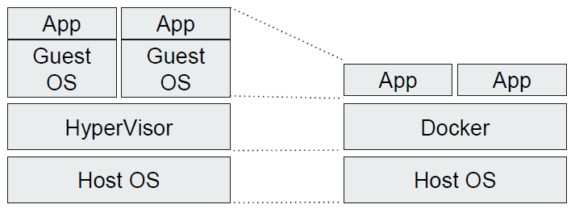
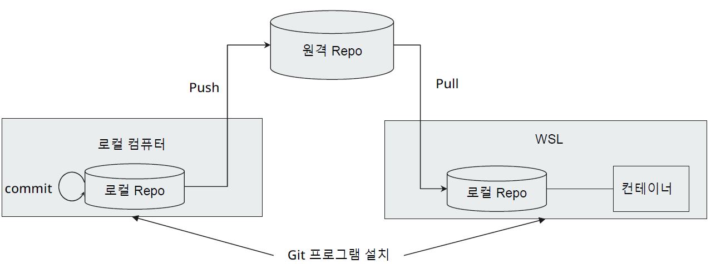

Environment Setting for Airflow
WSL, Docker Installment, Airflow Installment, Development Environment Setting, Python Interpreter Installment, VScode Installment, Git Evnvironment Setting, Airflow Library Installment
Engineering
template
- Windows에서 바로 리눅스 명령어를 실행할 수 있어서, Windows와 리눅스를 함께 사용하는 개발자들에게 편리
- Airflow는 Windows에 직접 설치 불가
- Windows에서 리눅스 작업환경을 만들기 위해서 WSL 설치가 필수
- 여유가 된다면 가상화 VM 또는 Public Cloud의 컴퓨팅 서비스에서 Airflow 설치 가능
- 설치 전 체크사항 (시작버튼 → 시스템 정보에서 확인)
- Windows 10 버전 2004 이상
- Windows 11
- PowerShell 명령어로 설치
- wsl –install
pwd: (print working directory) 현재 디렉토리 경로 출력ls: (list) 현재 디렉토리의 파일 목록 출력ls -als -lls -al
cd: (change directory) 디렉토리 변경mkdir: (make directory) 디렉토리 변경touch: (touch) 새로운 파일 생성rm: (remove) 파일 삭제 (디렉토리 포함: 옵션 r)cp: (copy) vkdlf qhrtkmv: (move) 파일 이동 및 이름 변경tar: (Tape ARchiver) 파일 및 디렉토리를 압축 해제- Airflow 설치 방법은 여러가지가 존재하며 그 중 하나가 도커 설치임
- 도커 컴포즈 (docker compose)를 이용하여 한번에 쉽게 설치 가능
- docker compose: 여러 개의 도커 컨테이너 설정을 한방에 관리하기 위한 도커 확장 기술로 에어플로우를 설치하기 위한 도커 컨테이너 세팅 내용이 들어있음
- CPU: 4Core 이상
- Memory: 16GB (권장-문제없음) / 8GB (최소-약간 버벅 거림)
- WSL에서 컨테이너 다수 실행시 메모리 점유율 상승
- 개발환경 세팅의 목표
- 로컬 환경에서 만든 dag을 컨테이너까지 배포하는 것
- Actions
- 로컬 컴퓨터에 파이썬 인터프리터 설치
- IDE(VScode) 개발환경 설정
- Github 레파지토리 생성
- 로컬 컴퓨터에 Airflow 라이브러리 설치
- WSL에 Git 설치 및 git pull이 가능한 환경구성
- Actions
- 컨테이너에서 사용하는 파이썬 버전 확인
- 파이썬 인터프리터 다운로드 (https://www.python.org/downloads/)
- 로컬 컴퓨터에 파이썬 설치
- VScode란?
- Microsoft사에서 2015년에 제작, 다양한 언어 개발을 돕는 IDE 툴
- Visual Studio 라는 IDE 툴과는 엄연히 다른 툴
- Actions
- VScode 다운로드 (https://code.visualstudio.com/download)
- VScode 설치, 파이썬 확장팩 설치
- 프로젝트 생성, 파이썬 가상환경 설정
- 파이썬 가상환경
- 라이브러리 버전 충돌 방지를 위해 설치/사용되는 파이썬 인터프리터 환경을 격리시키는 기술
- 파이썬은 라이브러리 설치 시점에 따라서도 설치되는 버전이 상이한 경우가 많음
- Github Repository 생성
- Git vs Github
- Git: 오픈소스 분산형 버전관리 시스템 또는 프로그램
- Github: Git을 기반으로 소스를 공유할 수 있도록 만들어진 웹 서비스
- Git 레파지토리: Github 에서 생성(https://github.com)
- Git vs Github
- Git Push & Pull
- Airflow 라이브러리 설치 대상과 설치 이유
- 로컬 컴퓨터의 파이썬 가상환경(venv)
- Why? Airflow DAG 개발을 위해 Airflow의 라이브러리들이 필요
- Airflow 라이브러리 설치 가이드
- https://airflow.apache.org/docs/apache-airflow/stable/installation/installing-frompypi.html
- 리눅스에서 파이썬 Airflow 라이브러리 설치시 그 자체로 Airflow 서비스 사용 가능
- WSL에서 pip install 명령으로 Airflow를 설치하지 않는 이유?
- pip install 로 Airflow 설치시 저사양의 아키텍처로 설치되며 여러 제약이 존재함 (Task를 한번에 1개씩만 실행 가능 등)
1 WSL Installment
1.1 WSL (Windows Subsystem for Linux)
Windows Subsystem for Linux은 Windows에서 리눅스 실행환경을 지원하는 Windows의 확장 기능
1.2 Why to install WSL?
1.3 How to install WSL?
1.4 Frequently Used Linux Commands
2 Docker Installment
2.1 Docker
리눅스내 가상화 관련 커널을 활용하여 어플리케이션을 독립적 환경에서 실행시키는 기술 가상화 서버(VM) 대비 Guest OS가 없어 경량화된 가상화 서버로 볼 수 있음

3 Airflow Installment
4 Development Environment Setting
4.1 개발 환경 권장 사양
4.2 개발 환경 workflow

4.3 Python Interpreter Installment
4.4 VScode Installment

4.5 Git Environment Setting
